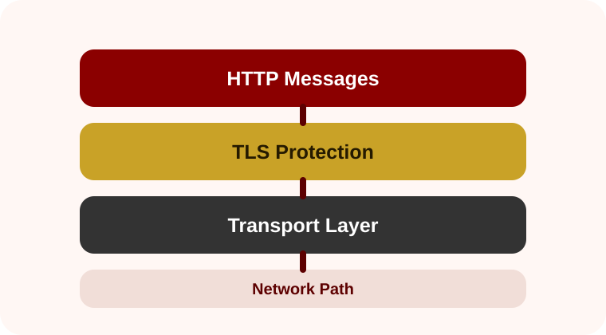

Why plain HTTP is risky
Plain HTTP traffic can be observed or changed by attackers on shared networks. A login form, script, image, or cookie sent without protection may expose behavior or allow unwanted content injection.
How web communication grew from simple document requests into secure, responsive, high-performance internet infrastructure.
Security
HTTPS protects HTTP communication by using TLS to provide confidentiality, integrity, and authentication.
HTTPS is not a separate content language. It is HTTP protected by TLS. The browser still requests pages, images, stylesheets, and scripts, but the connection is encrypted and the server presents a certificate that helps prove its identity.

Plain HTTP traffic can be observed or changed by attackers on shared networks. A login form, script, image, or cookie sent without protection may expose behavior or allow unwanted content injection.
Modern browsers and web APIs increasingly treat HTTPS as the normal baseline. Features such as service workers, geolocation permission workflows, camera access, and installable web apps depend on secure contexts.